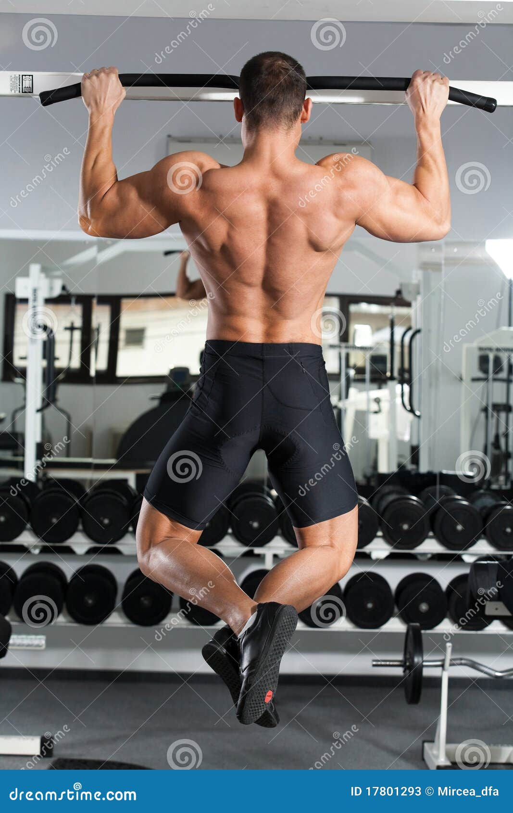

Day 1: Monday -chest
 Dumbbell Bench Press
Mixed-Style Incline Dumbbell Press
Crossover Pushup
Incline Pushup
Row-to-Pushup Complex
Dumbbell Bench Press
Mixed-Style Incline Dumbbell Press
Crossover Pushup
Incline Pushup
Row-to-Pushup Complex
Day2:Tuesday-Back

Cable lat pull down
High row machine
Bent-over rows with barbell
Landmine row
Upright barbell row
Day3:Wednesday-Biceps&Forearm
 SEATED DUMBBELL CURLS
SINGLE ARM PREACHER CURL
INCLINE BENCH BARBELL CURLS
CONCENTRATION CURLS
HIGH CABLE CURLS
SEATED DUMBBELL CURLS
SINGLE ARM PREACHER CURL
INCLINE BENCH BARBELL CURLS
CONCENTRATION CURLS
HIGH CABLE CURLS
Day4:Thursday-Triceps&Abs
 EZ-bar skullcrusher (flat, decline, incline)
Barbell skullcrusher
Dumbbell skullcrusher
Band skullcrusher
Behind-the-head skullcrusher
EZ-bar skullcrusher (flat, decline, incline)
Barbell skullcrusher
Dumbbell skullcrusher
Band skullcrusher
Behind-the-head skullcrusher
Day5:Friday-Shoulder
 Wall Handstand Push-Ups
Elevated Pike Push-Ups
Rear Delt Fly
Front Raise
Handstand Hold
Wall Handstand Push-Ups
Elevated Pike Push-Ups
Rear Delt Fly
Front Raise
Handstand Hold
Day6:Saturday-Legs
 More Overall Leg Mass
Greater Leg Definition
Starting Strong
Emphasize Your Quads
Emphasize Your Glutes
More Overall Leg Mass
Greater Leg Definition
Starting Strong
Emphasize Your Quads
Emphasize Your Glutes
Day:sunday-Abs
 Sit-up
Leg Lift
V-up
Seated knee tuck
Toe-Toucher
Sit-up
Leg Lift
V-up
Seated knee tuck
Toe-Toucher